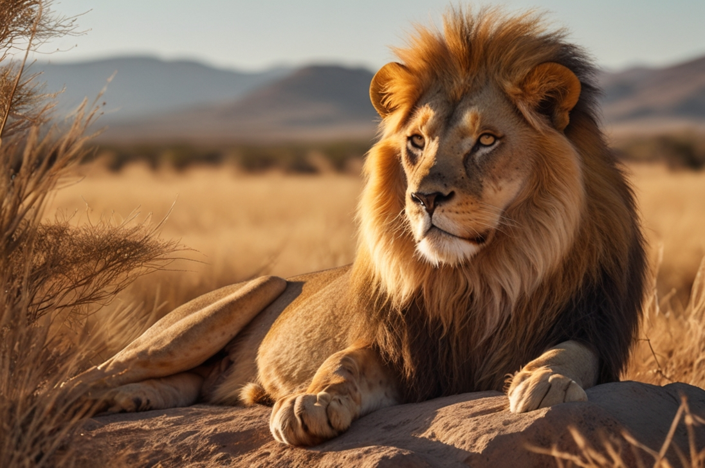

Lev
„Strážce klidu v hrdé savaně“

🦁 „Síla není v řevu, ale v tichu.“
- Povaha: Klidný, hrdý, ochranitelský
- Bydliště: Slunečné kamenné výšiny
- Oblíbená činnost: Dohlížení na ostatní zvířata
Nechodí rychle, ale když se hýbe, všechno kolem ztichne. Je jako přítomnost, kterou necítíš, ale víš, že chrání. A přestože má hlas jako bouře, většinou ho nepotřebuje. Lev. Hrdina bez zbraně – jen s pohledem.